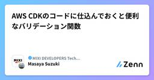

MIXI DEVELOPERS Tech Blogのフィード
https://zenn.dev/p/mixi
株式会社MIXIのZenn版テックブログです。実務で得た技術知見や個人的に調べたことなどを紹介しています。
フィード

AWS CDKのコードに仕込んでおくと便利なバリデーション関数
MIXI DEVELOPERS Tech Blogのフィード
株式会社MIXIでサロンスタッフ予約サービス「minimo」の機械学習やバックエンドの開発をしている鈴木です。今回はAWS CDKのコードに仕込んでおくと便利なバリデーション関数をいくつか紹介します。 バリデーション関数を仕込む利点AWS CDKはAWS CloudFormationのラッパーという側面があるため、それ自体のバリデーションはあまり充実していません。そのため、デプロイ時に失敗したり、実際に運用してみてミスに気づいたりする場面が存在します。そこでバリデーション関数を用意し、Constructで実行するようにすると、設定をミスした場合、 cdk diff が失敗する...
3日前

Dalli で Memcached の Multi-Set を使って高速化する
MIXI DEVELOPERS Tech Blogのフィード
モンスターストライク（以下、モンスト）のバックエンドでは、Memcached に強く依存しています。主に、DB（MariaDB）から取得したデータを保存して、読み込み側のパフォーマンス改善に利用しています。Memcached には Quiet モードという仕組みがあり、これを使うことでキャッシュの取得や保存のリクエストをまとめて送ることができます。https://docs.memcached.org/protocols/basic/#no-replyモンストの場合、非常に多くのデータをやり取りするため、この機能がかなり効いてきます。今までは、キャッシュの取得にだけ利用していましたが...
10日前
サロン予約サービス「minimo」でのAI活用の取り組み ~11周年を迎えたサービスにおける事例~
MIXI DEVELOPERS Tech Blogのフィード
はじめにこんにちは！サロンスタッフ予約サービス「minimo」でAI推進チームに所属している洗川です。近年のAI、特に生成AIの進化は目覚ましく、多くの分野でその活用が進んでいます。minimoでも、ユーザーの皆様により良い体験を届け、また開発や運営の生産性を向上させるため、2025年4月よりAI推進チームを立ち上げ、様々な取り組みを加速させています。本記事では、minimoが現在進行形で行っているAI活用の取り組みを、「サービス価値の向上」と「生産性の向上」、そしてそれらを支える「文化とサポート体制」の3つの軸でご紹介します。 minimoのAI活用minimoのAI活...
11日前
Claude Code Action + AWS MCPサーバーを用いたインフラコストの事前要約
MIXI DEVELOPERS Tech Blogのフィード
はじめにこんにちは！サロンスタッフ予約サービス「minimo」でインフラ周りを担当している洗川です。minimoでは、サービスの安定稼働のために週次で「インフラ定例」を開催し、AWSの利用料金や各種サービスのメトリクスを定点観測しています。しかし人の目で見る以上、多少の手間や見落としがどうしても発生してしまいます。そこで今回は、この定例確認項目をClaude Code ActionおよびBilling and Cost Management MCP サーバーで事前要約し、効率化と人の目では見落としがちな変化点の発見を目指した取り組みをご紹介します。 Claude Code ...
15日前
minimoでのLLMを使った掲載審査の裏側
MIXI DEVELOPERS Tech Blogのフィード
株式会社MIXIでサロンスタッフ予約サービス「minimo」の機械学習やバックエンドの開発をしている鈴木です。minimoでのLLMの活用事例として、2025年3月にリリースした「かんたんAIチェック」の裏側を紹介します。 minimoとはminimoは累計700万ダウンロード突破 (2025年5月時点) のサロン予約サービスです。美容師やネイリスト、アイデザイナーなどのサロンスタッフをサロン単位ではなく個人単位で予約することができます。 かんたんAIチェックとはサロンスタッフがminimoに掲載する際には掲載を審査に提出する必要があります。かんたんAIチェックは掲載が...
16日前
GoにおけるGemini APIでの検索グラウンディングの活用
MIXI DEVELOPERS Tech Blogのフィード
はじめにこんにちは！サロンスタッフ予約サービス「minimo」でAI推進チームに所属している洗川です。近年はLLM（大規模言語モデル）の進化が目覚ましく、多くのサービスで活用されています。しかし、LLMには「学習データに含まれない最新の情報は知らない」「事実に基づかない内容を生成することがある（ハルシネーション）」といった課題もあります。今回ご紹介するGemini APIの検索グラウンディングは、これらの課題に対する非常に強力な機能です。Google検索の結果をリアルタイムに参照し、回答の精度と鮮度を向上させることができます。本記事では、この検索グラウンディン...
17日前
話題のMCPサーバー「Serena」をClaude Codeで使ってみた
MIXI DEVELOPERS Tech Blogのフィード
はじめにClaude Codeの様子がおかしい。精度が低下したんじゃないか？という声がここ１か月ぐらいよく聞こえてくるようになりました。どうやらSerenaというMCPサーバーを使うと多少は改善するらしいという話も合わせてちらほらと聞いていました。Claude Codeを使っていく中で多少は改善の傾向はみられる気はしますが、まだまだ物足りないなと感じる部分があります。そこで話題になっていたSerenaを実際に検証してみることにしました。https://github.com/oraios/serena/tree/main serenaとはSerenaは、従来のコーディング...
18日前
Kaniko が開発停止されてしまったので docker buildx + docker-container driver に乗り換えた話
MIXI DEVELOPERS Tech Blogのフィード
3行でkaniko ( https://github.com/GoogleContainerTools/kaniko ) は docker のレイヤーキャッシュを使ってビルドを高速化するツールだが、2025年6月からメンテモードに入ってしまい、使用が非推奨になったdocker buildx build によるレイヤーキャッシュ付きビルドで高速化に成功した公式ドキュメントではデフォルトの docker driver でもレイヤーキャッシュが使えると書いてあるが、どうやっても使えず、 docker-container driver を使うようにした Kaniko とはKa...
22日前
BigQuery scheduled query では partitioning_field を指定できるが、公式ドキュメントがわかりにくい
MIXI DEVELOPERS Tech Blogのフィード
公式ドキュメントが説明不足でつらい気持ちになったので、この記事を書くことにしました。 BigQuery scheduled query とはBigQuery scheduled query とは、 BigQuery 上でクエリをスケジュール実行し、その結果を BigQuery テーブルに投入する GCP のサービスです。https://cloud.google.com/bigquery/docs/scheduling-queriesまた、BigQuery Data Transfer Service とは、Cloud Storage Amazon S3, Azure Blob S...
1ヶ月前
QUICを活用したスマートフォンアプリでのRTT測定手法
MIXI DEVELOPERS Tech Blogのフィード
海外の特定環境のモバイル通信網の状況と特定クラウドサービスの通信品質について、いくつかの指標でデータを取得や予想をしていきたいです。ネットワーク通信環境を測定する1つの指標として RTT（Round Trip Time）測定 があります。世の中にはいろいろな遅延測定サービスがありますが、モバイル網を使った測定ができるものが少ないと感じており、それを実測したいと考えたところから派生した技術挑戦です。モバイルでの実測値と固定網を利用した世の中のサービスの間の関係性が見えてくれば、そういったデータを活用した事前予測を立てやすくなると考えています。従来の測定手法では、スマートフォンアプリの...
1ヶ月前
Gemma3:270Mをファインチューニングして使ってみた
MIXI DEVELOPERS Tech Blogのフィード
はじめにhttps://developers.googleblog.com/ja/introducing-gemma-3-270m/先日、Gemma3に新しい「Gemma3 270M」が追加されました。このモデルは2億7千万パラメータというコンパクトなサイズでありながら、軽量で効率的に動作するのが特徴です。最大の特徴は、特定の用途に合わせたカスタマイズのしやすさです。このモデルは一からファインチューニング用に設計されているため、開発者が自分の目的に合わせて調整することが容易に可能となっています。また、指示を理解して従う能力と、文章を整理・構造化する機能が既に事前に訓練されて...
1ヶ月前
【2025年版】MIXI 新卒向け技術研修の資料・動画を公開しました。
MIXI DEVELOPERS Tech Blogのフィード
こんにちは。開発本部 たんぽぽ室 Enablement グループの杉田です。2025年度新卒向け技術研修の資料と動画を公開しました。MIXI の新卒向け技術研修は、一部の科目を除いて、実際の開発現場で活躍する MIXI のエンジニアが講師を務めており、現状に合わせて見直しも行われていますので、最新の情報で学習することができます。是非、自己学習や勉強会の教材として、スキルアップや成長支援にお役立てください。!＞＞＞ おねがい ＜＜＜公開している資料や動画は、是非、勉強会や社内の研修などにご自由にお使いいただければと思いますが、以下のような場でのご利用はご遠慮ください。受講者か...
1ヶ月前
なぜ生成AIで期待した効果が出ないのか？ 導入前に欠かせない2つの準備
MIXI DEVELOPERS Tech Blogのフィード
はじめに個人や仕事で生成AIをすでに利用している方が多くいらっしゃると思います。しかし、実際に業務で生成AIを効果的に活用できている方はどれほどいるでしょうか。多くの組織では「ツールは導入したが期待した成果が出ない」という課題に直面しているのではないでしょうか。その根本原因は導入前の準備不足にあると考えています。本記事では、AI導入を成功に導く2つの重要な準備と、真の効果を得るための業務設計の考え方について詳しく解説します。 なぜAI活用が進まないのかよくあるAI導入の失敗パターンを見てみましょう。 パターン1 「とりあえず使ってみよう」と開始ChatGPTやGe...
1ヶ月前
Claude Code - SuperClaude を使って Terraform 書いてみた
MIXI DEVELOPERS Tech Blogのフィード
こんにちは。ご機嫌いかがでしょうか。"No human labor is no human error" が大好きな吉井 亮です。VibeCoding/VibeOps を極めるべく、Terraform も Coding Agent に書いてもらうと考えています。試行錯誤しながら最適な方法を模索しているところです。今回は Claude Code ＆ SuperClaude を使って Terraform コードを書いてみました。 SuperClaudeClaude Code を拡張する強力なフレームワークです。本来はアプリケーション開発に強みを発揮するはずなので、開発者の方...
1ヶ月前
LiteLLM のロードバランシングをローカルで試してみた
MIXI DEVELOPERS Tech Blogのフィード
こんにちは。ご機嫌いかがでしょうか。"No human labor is no human error" が大好きな吉井 亮です。LiteLLM を試してみます。Coding Agent 無しには仕事ができないこの頃ですが、モデルどうするんだ問題があると思っています。LiteLLM の可能性を探っていきます。 OpenAIOpenAI のキーを発行します。個人でのローカルキー管理が完璧であることが前提です。ここから OpenAI にログインし、API キーを発行します。 Google Cloudサービスアカウントのキーを発行します。個人でのローカルキー管理が完璧で...
2ヶ月前
gpt-oss:20bをローカル環境で動かしてみた
MIXI DEVELOPERS Tech Blogのフィード
!この記事は人間が書きました。 はじめにOpenAI社より先日gpt-ossが発表されました。Apache2.0ライセンスの下でgpt-oss-120bとgpt-oss-20bがそれぞれ利用可能です。モデルの性能評価ではgpt-oss-120bモデルは、80GBのGPUで稼働し、コア推論ベンチマークでo4-miniとほぼ同等の結果gpt-oss-20bモデルは、16GBのメモリで動作し一般的なベンチマークでo3‑miniと同様の結果と記載されています。https://openai.com/ja-JP/index/introducing-gpt-oss/実際にgpt...
2ヶ月前
Dalli で Memcached のメタプロトコル
MIXI DEVELOPERS Tech Blogのフィード
モンスターストライクのバックエンドでは、Memcached に強く依存しています。主に、DB（MariaDB）から取得したデータを保存して、読み込み側のパフォーマンス改善に利用しています。Memcached には、昔からあるバイナリプロトコルと、比較的最近（2021年7月とかですが）できたメタプロトコル（メタテキストプロトコル）というのがあります：https://docs.memcached.org/protocols/長いことバイナリプロトコルを使っていたのですが、バイナリプロトコルはかなり前から deprecated になっており、いつ使えなくなるかわからないのでメタプロトコル...
2ヶ月前
Flutter Web x Unity as a LibraryでPoCアプリ作った話
MIXI DEVELOPERS Tech Blogのフィード
はじめに最近、PoCとしてFC東京のアナリスト向けの支援ツールを作ったんですが、その際にFlutter WebでUnity as a Libraryを組み合わせたチャレンジングな技術スタックで開発を行ったので、所感を述べておこうと思います。 作ったもの=> 1人称3次元視点（選手視点）を提供するサッカー作戦盤ツール背景：サッカーの戦術指導などの現場では、ホワイトボードとマグネットを使って選手配置を再現するというアナログな方法で行われています。選手からすると3人称2次元視点であり、体感値と乖離が生まれてしまっています。より効果的な戦術指導を行えるために、1人称3次元...
2ヶ月前
自分が使っているサービスに不正ログインされたかも？と思った時に最初にやるべきこととは
MIXI DEVELOPERS Tech Blogのフィード
ritouです。世の中様々なことが起こります。地震、津波、サ終。まずは落ち着きましょう。 自分が使っているサービスに不正ログインされたかも？と思った時に最初にやるべきこと 概要最近、不正ログインの話を耳にする機会が増えたのではないでしょうか。証券会社は言わずもがな、GoogleやX（旧Twitter）のアカウントなど、被害はすぐそこに潜んでいます。巷では 突然現れた親切な人 が「パスキーを設定しましょう」といった対策を教えてくれるのですが、本記事では それよりも先にやるべきこと、そしてサービス提供者が意識すべきこと を解説します。 一人暮らしの自宅に帰宅した際、家の鍵が...
2ヶ月前
Kiroにspecを作らせてClaude Codeに実装させる
MIXI DEVELOPERS Tech Blogのフィード
!この記事は人間が書きました。 はじめにこんにちはKiroが話題になりすでに色々と検証して使った方も多いと思います。私もリリース当日に触っていたのですが、話題になりすぎて途中からClaude Sonnet 4.0がビジー状態で使えなくなったためしばらく使用を控えていました。https://x.com/shirochange/status/1946102620797780269Kiroのブームも落ち着いてきている様子だったのでこのタイミングでようやく本格的に検証をしています。実際にKiroに関するブログ記事やSNSを見ていると実装計画を立てるフロー(spec)をほめてい...
2ヶ月前